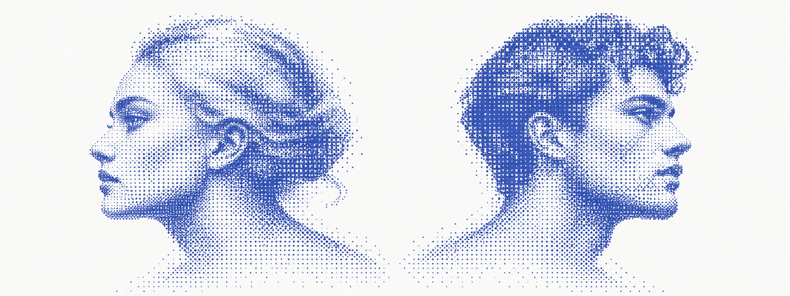

Ask out loud.
Hear it in your ear.
Oldhand answers mid-task, in your ear, from what your team already
knows. No screens, no typing, hands stay on the job.

◉ Oldhand │ BLOCK C · NIGHT SHIFT
LEARNED FROM THE TEAM● ● ● ● 12 ON SHIFT
M
MARCO · ELECTRICIAN
14 MARBreaker 6 on riser 2 now feeds unit 5. The label is old.
R
RUI · SUPERVISOR
● 20 MINRiser 2 shares a neutral with riser 3.
A
ANDRÉ · APPRENTICE
● 5 MINThe tenant in unit 4 wants ten minutes’ notice.
SCROLL · HOW OLDHAND LEARNS FROM A SHIFT ↓
Good knowledge travels.
A visual demonstration of team notes appearing as they are shared.